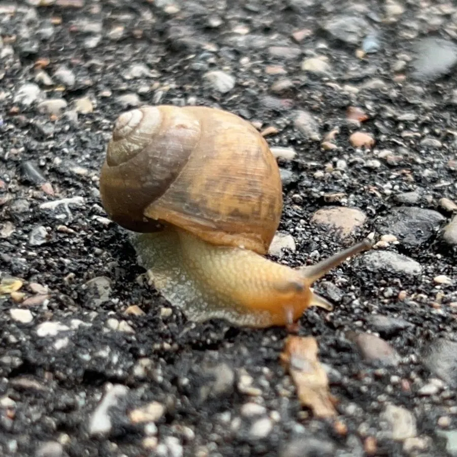

软体动物 · 动物界
灰巴蜗牛 Bradybaena ravida

中国最常见的陆生蜗牛之一，壳呈灰褐色带深色带纹，雨后常成群爬出，是农作物和园艺上的常见害虫。
- 分类
- 门软体动物门纲腹足纲目柄眼目科巴蜗牛科属巴蜗牛属
- 栖息环境
- 农田、菜园、果园和住宅附近的阴暗潮湿处
- 地理分布
- 中国大部分地区，以及朝鲜半岛和日本
- 保护级别
- 尚无保护级别；为常见农业害虫
物种志
灰巴蜗牛的贝壳呈扁球形，壳径约两厘米，壳质较薄，壳面灰黄至灰褐色，具有细密的生长纹和一条明显的褐色色带，螺层约五至六层，壳顶钝，壳口半月形，唇缘薄而外翻。身体灰褐色，触角两对，后触角顶端生眼。它靠足部分泌黏液滑行，留下银白色的爬痕。遇干燥或寒冷时，它会分泌黏液封住壳口，进入休眠状态。
它分布于中国大部分地区，以及朝鲜半岛和日本，栖息在农田、菜园、果园、路旁和住宅附近的潮湿处，喜欢阴暗多湿的环境，多在夜间和雨后活动。它是杂食性种类，取食蔬菜、花卉、果树幼苗和腐殖质，是农业和园艺上的常见害虫，也可能作为某些寄生虫的中间宿主。雌雄同体，异体受精，每年可产卵数次，卵产在松软的土中。防治上多采用人工捕捉、诱杀和药剂相结合的方式，目前尚无保护级别。
形态与习性
- 食性杂食，取食蔬菜、花卉、果苗和腐殖质
- 壳径约两厘米，壳面灰褐色带一条深色带
- 习性昼伏夜出，雨后活动频繁
- 休眠干燥或寒冷时分泌黏液封口休眠
- 繁殖雌雄同体，异体受精，每年产卵数次
- 危害农业和园艺害虫，可能携带寄生虫
趣味知识
- 灰巴蜗牛爬过的地方会留下一条银白色黏液痕迹，干燥后闪闪发亮。
- 天气干旱时它会用黏液在壳口封一层白膜，缩在壳里休眠数月。
- 它是雌雄同体的动物，两只蜗牛交配后都能产卵。